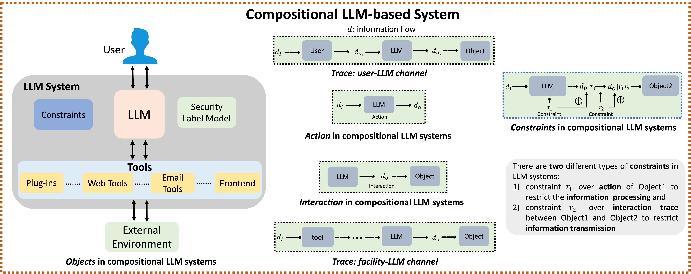

Vulnerabilities in Interaction between Facilities and the LLM: Web Tools

Large Language Model (LLM) systems are inherently compositional, with individual LLM serving as the core foundation with additional layers of objects such as plugins, web tools, and so on. Along with the great potential, there are also increasing concerns over the security of such probabilistic intelligent systems. However, existing studies on LLM security often focus on individual LLM, but without examining the ecosystem through the lens of LLM systems with other objects (e.g., Frontend, Web tools, Email tools, and so on). In this paper, we systematically analyze the security of LLM systems, instead of focusing on the individual LLMs. To do so, we build a security label model where integrity labels are applied to specify the execution semantics of the information within the system. Based on this construction, we conduct a multi-layer analysis of the security constraints over the information flow within the system. Due to the unique probabilistic nature of LLM, the attack surface of the LLM system can be decomposed into two key components: (1) analysis of the existence of multi-layer constraints, and (2) analysis of the robustness of these constraints. To ground this new attack surface, we propose an automatic evaluation algorithm and apply it to the three popular LLM systems, OpenAI ChatGPT, Gemini, and LangChain. Our investigation exposes several security issues, not just within the LLM model itself but also in its integration with other components. We found that although LLM systems have designed most security constraints to different attack targets, these constraints are still vulnerable to attackers. To further demonstrate the real-world threats of our discovered vulnerabilities, we construct an end-to-end attack where an adversary can illicitly acquire the user's chat history, all without the need to manipulate the user's input or gain direct access to OpenAI ChatGPT.


BibTex Code Here